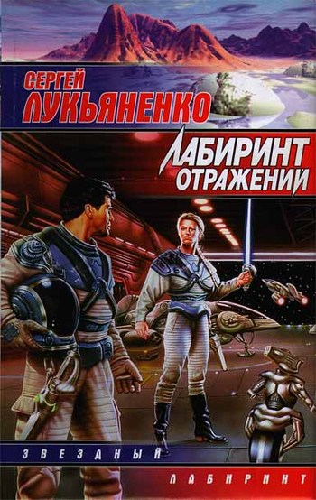

-

Лабиринт отражений
«Лабири́нт отраже́ний» — роман российского писателя-фантаста Сергея Лукьяненко, первая часть трилогии в стиле киберпанк о виртуальном городе Диптаун. Роман был написан в 1997 году и впервые опубликован издательством «АСТ» в том же году в серии «Звёздный лабиринт». Вместе с романами «Фальшивые зеркала» и «Прозрачные витражи» входит в цикл «Лабиринт отражений».
Действие романа одновременно происходит в реальном Санкт-Петербурге и виртуальном городе Диптаун, созданном после изобретения способа перемещаться в виртуальный мир — глубину. Только некоторые люди — дайверы — могли свободно покинуть глубину, в то время как остальные пользовались специальными таймерами. Дайверу Леониду предстоит спасти из компьютерной игры застрявшего в ней пользователя. В 1998 году роман был отмечен премией крупнейшего всероссийского конвента любителей фантастики, фэнтези и ролевых игр — «Зиланткон». Был номинирован на премию «Сигма-Ф» — приз читательских симпатий журнала «Если».
- Адаптации
- Аудиокниги В 2005 году вышла адаптация книги от «1С». Аудиокнига весьма продолжительна — 13 часов 21 минута. Актёр Кирилл Петров читает роман полностью, хотя при создании аудиокниг могут быть не включены незначительные сюжетные линии. Петров хорошо владеет голосом, умело передает образы, переживания и интонации большинства героев, улавливает атмосферу происходящего
- Экранизация В 2004 году появилась информация о готовящейся экранизации романа. «Первый канал» приступил к работе над полнометражным художественным фильмом с рабочим названием — «Глубина». Выход картины в кинотеатрах был запланирован на конец 2005 года, телевизионная версия, состоящая из 4-х эпизодов, должна была выйти в 2006 году. Создатели проекта решили, что название «Лабиринт отражений» для фильма слишком громоздко, но последующий сериал сохранит оригинальное название. Первая версия сценария была написана писателями Мариной и Сергеем Дяченко. Лукьяненко изначально просматривал все версии сценария, однако, непосредственно написанием не занимался. Впоследствии, Первый канал переориентировался на выпуск второго фильма из серии Дозоров, отложив работу над экранизацией. Неоднократно сообщалось о возобновлении работы. 9 июня 2015 года в официальном блоге Лукьяненко написал, что работы не возобновились, но Первый канал не отказывается от проекта.
- Настольная игра По мотивам романа в 2006 году Алексей Калинин и издательство «АСТ» выпустили настольную карточную игру «ДипТаун. Зов глубины». Игра посвящена всей виртуальной саге, объединяющей романы «Лабиринт отражений», «Фальшивые зеркала» и «Прозрачные витражи». В игре принимает участие от 2 до 6 человек. Продолжительность партии 30-50 минут. Игрок в роли дайвера должен взламывать сервера, преодолевая защитные программы с помощью боевых вирусов и программ, одновременно мешая делать то же самое остальным игрокам и защищая уже взломанные сервера. Побеждает взломавший больше защитных программ игрок, дайвер которого оказался выше в Галерее Дайверов.
Типы трекинга 2D-трекинг(Pixel Tracking) 3D-трекинг(как часть процесса Mathmoving-a) 3D-трекинг(как часть процесса Motion Capture) -
Книги
Виртуальная реальность в книгах